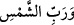

yemin etmeyi yasakladı” dersen bu hususta Tercümetü’l- Fütûhât sâhibinin şu beyânı
sana bir cevap olabilir:
“İslam’dan başka bir din ile yemin etmekten ve konuşmaktan sakın! Eğer böyle olursa
«İslam dininden uzağım» demiş olursun. Böyle bir durumda ihtiyaten îmanını tazele. Bir
kimse Allah’tan başka bir şey üzerine yemin etmekten de yine nehyedilmiştir.”
Benim kanâatime göre Yüce Allah’ın bu şekilde yemin etmesinin bazı sebepleri
vardır:
1- Bu kasem edilenlerden, muzâf’ın hazfedilmiş olması mümkündür.Yâni __WORD__ ın
aslı __WORD__ şeklinde, __WORD__ nin aslı __WORD__ şeklinde, __WORD__ nin aslı da __WORD__ şeklinde olabilir.
2- Araplar bu varlıklara önem verip onların üzerine yemin ettikleri için Allah da bu
varlıklara yemin etmiş olabilir. Zira Kur’ân-ı Kerim Arapların vâkıf oldukları bir
tarzda inmiştir.
3- Yeminler, yemin edenin önem verdiği, büyüklük atfettiği şeyler üzerine yapılır.
Yâni üzerine yemin edilen, yemin edenden daha yüce olmalıdır. Allah Teâlâ ise,
kendinden üstün varlık bulunmayan en yüce yaratıcıdır. Dolayısıyla Allah’ın bazen
kendisi üzerine bazen de mahlukâtın üzerine yemin etmesinin sebebi, onların “el-Bâri”,
“es-Sâni” ve “el-Hâkim” olan yaratıcılarına delâlet etmesi yönüyledir.
Bazıları şöyle demiştir: “Yaratılanlara yapılan yemin yaratıcıyı gerektirir. Çünkü
mef’ulun zikri, fâilini gerektireceği için fâili bulunmayan bir mef’ûlün bulunması
muhaldir.” Bazı âlimler de Allah Teâlâ’nın istediği mahlukâtı üzerine yemin etme
hakkına sâhip olduğunu ama insanların Allah’tan başkası adına yemin etme hakkına
sâhip olmadığını belirtmişlerdir. Ulemanın bir kısmı ise yeminin ya bir fazilet veya
menfaat dolayısıyla olduğunu, mahlûkatın da bu iki şeyden hâlî kalamayacağını beyân
etmişlerdir.
[1]. Müslim, Münafikin 15; Ahmed b. Hanbel, el-Müsned, III, 341, 346
[2]. Deylemî, hadis no: 5354.
[3]. Deylemî, hadis no: 3514.
[4]. Buhari, Hac, hadis no: 1727; Müslim, Hac, hadis no: 1301.
[5]. Deylemî, hadis no: 8064.